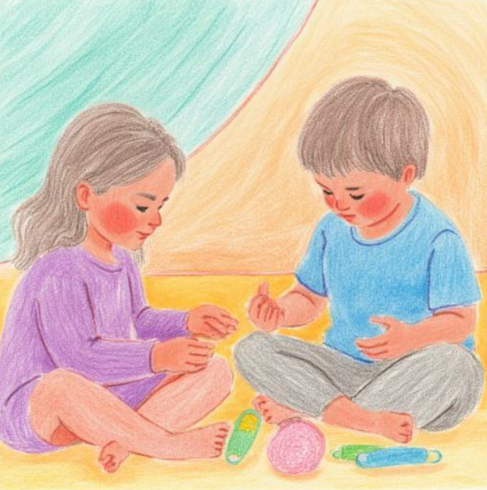

Designed and built by Delroy Barnies
BECOME AS LITTLE CHILDREN

Matthew 18:3 NKJV
[3] and said, “Assuredly, I say to you, unless you are converted and become as little children, you will
by no means enter the kingdom of heaven.
Jesus spoke a parable. what exactly did he mean when he said, "become like little children"
Let's look at the characteristics of a child
Children are so innocent; they BELIEVE everything and don't question too much.
They are extremely trusting and affectionate in nature.
They are loving, adorable, and cuddly. They love freely and without restriction.
Their thoughts are PURE; they are not tainted by this world or corrupted by any external man-made ideas.
If you tell a child you going to buy him/her a bike, they BELIEVE you, may ask a few questions out of
PURE innocence,
Like, let's go to the shop to buy my bike? Or where is my bike? But they believe, and because the
thought process is pure, there is no negative energy that can make them have any evil thought or mixed
emotion.
Kids have very IMAGINATIVE minds and will be like, "My mom is going to buy me a bike," and make a story
about where she's going to ride and so forth.
They don't worry about name brands; when it's coming, they simply believe.
Kids are like sponges soaking up information and constantly LEARNING.
"Grow your child up in the ways of the Lord, they will never depart from it."
Kids are quick to forgive; the purity within them will not contain and reject any form of
unforgiveness...
PURITY REJECTS UNFORGIVENESS.
The least of you will become the most.
Humble yourself before the Almighty so that He may exalt you.
And so this is what Jesus meant according to scripture: key words.
(John 3:16) "Whoever believes in Christ" will not perish but have eternal life.
Believe in God for everything, children are youthful, God wants to renew our youth.He promises us never
to perish and have eternal lives but that promise is to only those that believe.
Matthew 5:8 NIV [8] Blessed are the PURE in heart, for they will see God.
Kids are pure, and in their purity they see God in everything... God wants us to see Him in everything.
He is our God on the mountains and He is still our God in the valley.
(Write the vision down and make it plain, Habakkuk 2:2)...write the IMAGINATION down, speak the
imagination out..."My tongue is a pen as skillful as a writer" (PS 45:1).
"My tongue, the pen, is writing out my thoughts, my imagination."
Psalm 32:8
I will instruct you and TEACH you in the way you should go;
"When you are pliable to learn, you are molded the way God wants to mold you; it becomes easy to follow
the correct path because you have allowed a higher power, which is the Holy Spirit, to lead you.
There are benefits to the person always ready to learn.
Ephesians 4:32
Be kind to one another, tenderhearted, FORGIVING one another, as God in Christ forgave you.
Christ forgave us; we are not above Christ.
Let us learn to walk in forgiveness; the keys that lead to prosperity in health are through forgiveness.
And so unless you can convert or become like a "little" child, you will not enter the Kingdom.
The Shulamite